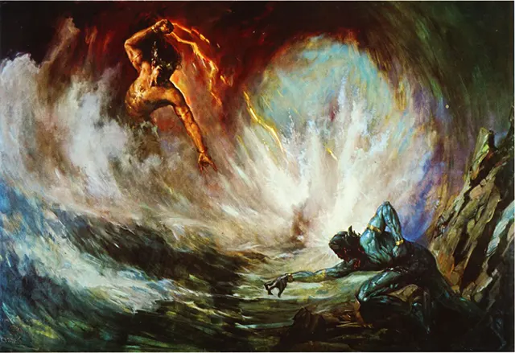
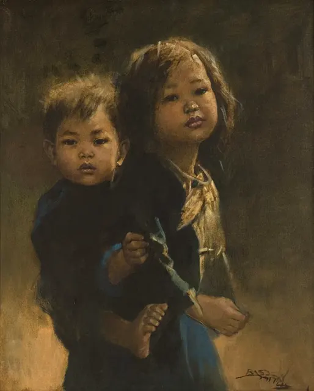

Koleksi Karya Abadi
Kurasi Resmi Lukisan Realistik-Romantis
Karya-karya Terpilih
Karya Utama

Ibu & Anak
1992

Pangeran Diponegoro
1949

Pertempuran Gatotkaca & Antasena
1956

Kakak Beradik
1978

Nyi Roro Kidul
1950

Soekarno
1942
![[DESKRIPSI]](assets/images/perkelahian.png)